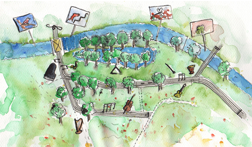

Programme for Saturday, May 31
Morning
| 10.00 - 13.00 | Workshops by musicians from the philharmonie zuidnederland More information & registration are available on the Workshops page. |
Afternoon
Main podium
| 14.00 - 15.00 | Bragi Groningen |
| 15.30 - 16.30 | Rotterdams Studenten Orkest |
| 17.00 - 18.00 | Eindhovens Studentenkoor Vokollage |
| 18.30 - 19.30 | L'Union Fraternelle Veldhoven |
Ensemble podium at the Zwarte Doos
| 15.00 - 15.30 | Studenten Blokfluitensemble Sambuca |
| 16.30 - 17.00 | Jong Trombone Collectief |
| 18.00 - 18.30 | Arundokwintet |
| 19.30 - 20.00 | Rodinia |
| 20.00 - 20.45 | Mondharmonicakwartet Fata Morgana |
Side podium: Inspiratiecafe
| 14.00-14.45 | Heleen Florusse: "Maak werk van je talent!" |
| 15.00-16.00 | Jacob Voorthuis: "Music & Architecture" |
| 16.15-17.15 | Maartje Vos: "De invloed van Muziek in de Beeldende Kunst" |
| 17.30-18.30 | Remy Wenmaekers: "De akoestiek op het podium: horen en gehoord worden" |
Evening
Main podium
| 21.00 - 22.45 | The Website Story by ESMG Quadrivium, conducted by Jos Schroevers |
| 23.00 - 24.00 | Borrelconcert by Bigband Studentproof & ESMG Quadrivium, conducted by Ghislain Bellefroid |
Programme for Sunday, June 1
Opening "Doe de Dommel"
Main podium
| 11.00 - 11.30 | Jong Trombone Collectief conducted by Mark Boonstra |
| 11.30 - 12.00 | Festive opening of Doe de Dommel by the Tipo Tango Guitar Orchestra, conducted by Peter Constant |
| 12.00 - 13.00 | Tilburgs Festivalorkest, conducted by Marcel Geraeds |
Kamermuziek op de Dommel
Main podium and side stages
| 13.00 - 18.00 | Kamermuziek op de Dommel, previuosly known as Kamermuziek in het Groen. The Muziekgebouw Eindhoven presents an afternoon of chamber music, with classical hits played by top professionals on five podia. With performances by: Amsterdam Sinfonietta Soloists, Camerata RCO, Storioni Trio & Academy, Tromp Percussion Eindhoven, Orlando Quintet, Piotr Jasiurkowski & Tobias Borsboom, Eva van Grinsven & Helena Basilova, Bl!ndman, and others. |
Kindermuziektuin
| 13.00 - 18.00 | A special garden for kids, who can wander around with a children's score full of illustrations, facts, and activities. Kids can playfully learn about classical music in a natural setting. In the garden they can make music themselves, and there will be challenging musical puzzles and games. Fun, interactive, and educational. |
|  | |
| Performances in de Kindermuziektuin: | |
| 13.30 | De koning is (mu)ziek, with the CKE |
| 14.30 | Scratch choir (NSK) |
| 14.45 | Performance by the Jong Trombone Collectief o.l.v. Mark Boonstra |
| 15.15 | Dan Senn's Int. Space Band |
| 15.30 | Young talent class CKE |
| 16.00 | De koning is (mu)ziek, with the CKE |
| 17.00 | Young talent class CKE |